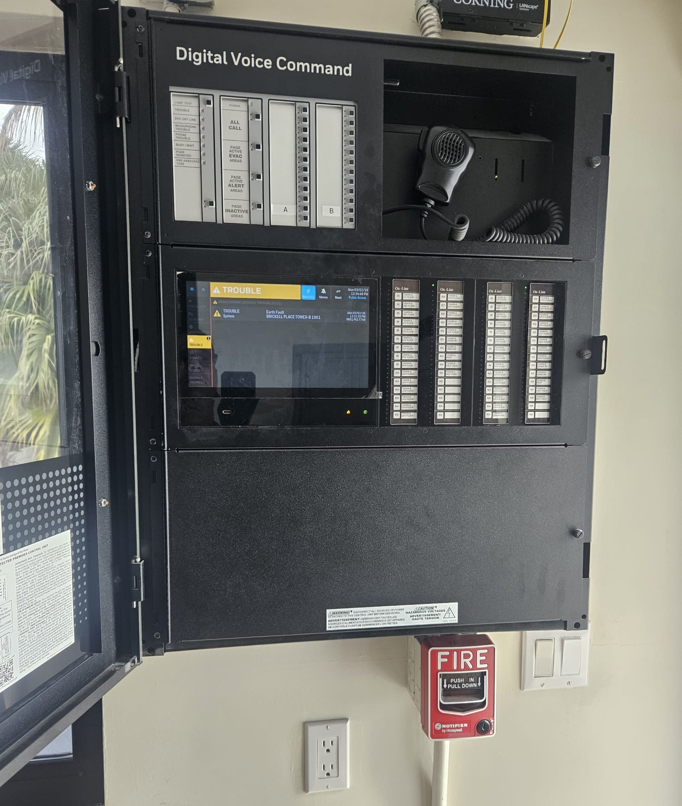
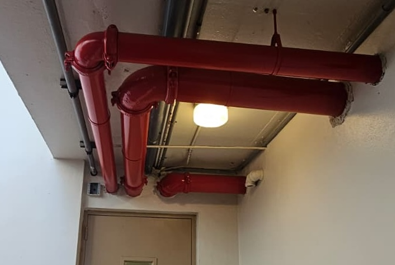
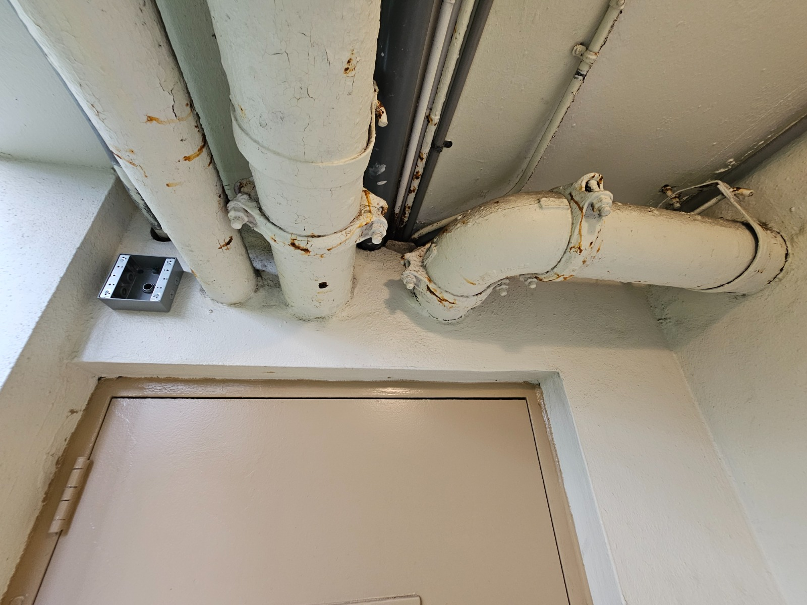

Una reconstrucción de varios años, financiada con cuota extraordinaria, convirtió un sistema de incendios dañado en una plataforma operativa alineada con código.
Después del daño por agua asociado al huracán IRMA, el panel principal de alarma de incendios quedó comprometido. Un reemplazo previo del panel ya había activado la obligación de actualización integral, porque sustituir un componente mayor del sistema exige llevar todo el sistema al código vigente.
Ruta de actualización del sistema completo: la Junta Directiva coordinó con el departamento de bomberos, el ingeniero y el contratista para reconstruir el sistema según código en ambas torres y en los townhouses.
Equipo crítico reforzado: los paneles de incendio se reubicaron en un área más segura, y el panel anunciador se movió a la garita principal para facilitar la respuesta de emergencia.
Trabajo de confiabilidad de supresión de incendios: aproximadamente el 40% de la tubería de rociadores del garaje fue reemplazada, junto con bombas clave e infraestructura de soporte.
Cumplimiento de comunicaciones de emergencia: se instalaron antenas BDA requeridas por código para que los bomberos puedan mantener cobertura de radio en toda la propiedad.
Preparación de acceso: los patrones de tráfico se ajustaron para mejorar la entrada y maniobrabilidad de camiones de bomberos durante respuesta de emergencia.

Arrastre la línea central para comparar el estado anterior de la tubería de rociadores del garaje con la tubería actual ya modernizada.


El sistema actualizado está operativo. La inspección final está completa para la Torre A; faltan las inspecciones finales del Edificio B y los townhouses para cerrar permisos.
Este fue un esfuerzo de ejecución quirúrgica de varios años, realizado mientras los residentes continuaban su vida diaria con mínima interrupción. Redujo riesgo de responsabilidad, mejoró la preparación ante emergencias y dejó la infraestructura crítica de seguridad contra incendios en una base mucho más sólida.